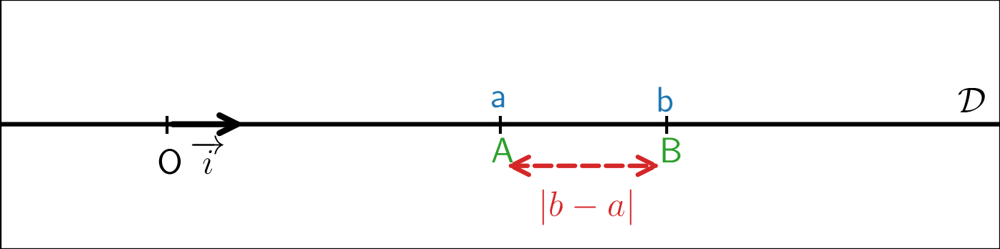
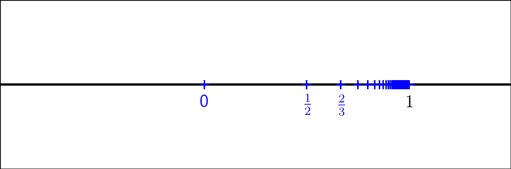
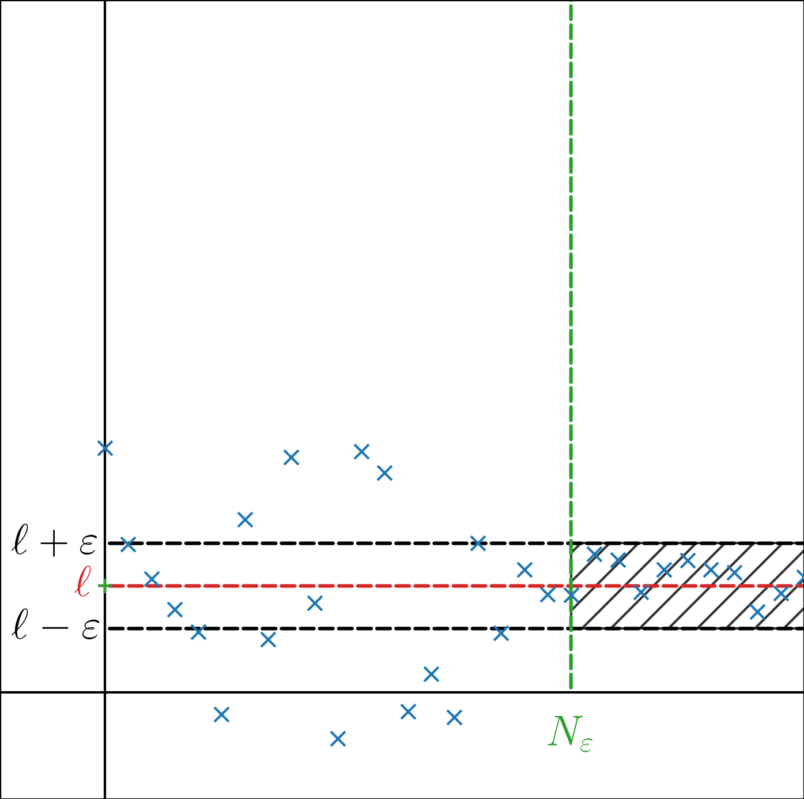

Soit \(\mathcal{D}\) une droite du plan et \((O,\overrightarrow{i})\) un repère de \(\mathcal{D}\) tel que \(\|\overrightarrow{i}\| = 1\).
Soient \(a,b \in \mathbb{R}\) et \(A \in \mathcal{D}\) (resp. \(B \in \mathcal{D}\)) d’abscisse \(a\) (resp. \(b\)) dans \((O,\overrightarrow{i})\).
On considère la distance entre \(A\) et \(B\), \(d(A,B) = \|\overrightarrow{AB}\|\).
Alors, \(\overrightarrow{AB} = \overrightarrow{AO}+\overrightarrow{OB} =\overrightarrow{OB}-\overrightarrow{OA} = (a-b)\overrightarrow{i}\) donc \(d(A,B)= \sqrt{(b-a)^2} = |b-a|\).

(Distance usuelle sur \(\mathbb{R}\)) Soient \(a,b \in \mathbb{R}\), la distance de \(a\) à \(b\), notée \(d(a,b)\) est le réel positif \(|b-a|\).
(Propriétés de la distance usuelle sur \(\mathbb{R}\)) Soient \(a,b,c \in \mathbb{R}\),
\(d(a,b) = 0 \iff a=b\)
\(d(a,b) = d(b,a)\)
\(d(a,c) \leq d(a,b)+d(b,c)\) (inégalité triangulaire).
Soient \(a,b,c \in \mathbb{R}\),
\(d(a,b) = 0 \iff |b-a| = 0 \iff b-a = 0 \iff b=a\),
\(d(a,b) = |b-a| = |a-b| = d(b,a)\),
\(d(a,c) = |c-a| = |(c-b)+(b-a)| \leq |c-b|+|b-a| = d(b,c)+d(a,b)\).
Soient \(a,b \in \mathbb{R}, c \in \mathbb{R}^{+}\) tels que \(|a-b| \leq c\) alors \[|a| \leq |b|+c\]
\[|a| = |a-b+b| \leq |b|+c\] par inégalité triangulaire.
(Segment de \(\mathbb{R}\)) Soient \(a,b\in \mathbb{R}\) tels que \(a \leq b\), le segment d’extrémités \(a\) et \(b\) est \(\{x \in \mathbb{R}/ a \leq x \leq b\}\), noté \([a,b]\).
On définit aussi \(\{x \in \mathbb{R}/ a < x < b\}\), noté \(]a,b[\).
Soient \(a,b\in \mathbb{R}\) tels que \(a \leq b\), \(c = \frac{a+b}{2}\) et \(h = \frac{b-a}{2}\),
\[\begin{aligned} x \in [a,b] & \iff d(x,c) \leq h, \\ x \in ]a,b[ & \iff d(x,c) < h. \end{aligned}\]
\[\begin{aligned} x \in [a,b] & \iff a \leq x \leq b \\ & \iff a-c \leq x-c \leq b-c \\ & \iff -h \leq x-c \leq h \\ & \iff |x-c| \leq h \\ & \iff d(x,c) \leq h. \end{aligned}\]
\[\begin{aligned} x \in ]a,b[ & \iff a < x <b \\ & \iff a-c < x-c < b-c \\ & \iff -h < x-c < h \\ & \iff |x-c| < h \\ & \iff d(x,c) < h. \end{aligned}\]
(Intervalle borné/fermé de \(\mathbb{R}\)) Soit \(A\) partie de \(\mathbb{R}\), non vide.
\(A\) est un intervalle borné de \(\mathbb{R}\) s’il est de la forme \([a,b]\) (\(a \leq b)\), \(]a,b]\) (\(a< b)\), \([a,b[\) (\(a< b)\) ou \(]a,b[\) (\(a< b)\) avec \(a,b\in \mathbb{R}\).
\(A\) est un intervalle fermé de \(\mathbb{R}\) s’il est de la forme \([a,b]\) (\(a \leq b)\), \([a,+\infty[\), \(]-\infty,b]\) ou \(\mathbb{R}\) avec \(a,b\in \mathbb{R}\).
(Majorant/minorant d’une partie de \(\mathbb{R}\)) Soit \(A\) une partie de \(\mathbb{R}\), non vide.
Soit \(M \in \mathbb{R}\), on dit que \(M\) est un majorant de \(A\) si : \(\forall a \in A, a \leq M\),
Soit \(m \in \mathbb{R}\), on dit que \(m\) est un minorant de \(A\) si : \(\forall a \in A, m \leq a\).
(Partie majorée/minorée d’une partie de \(\mathbb{R}\)) Soit \(A\) une partie de \(\mathbb{R}\), non vide.
On dit que \(A\) est majorée s’il existe \(M \in \mathbb{R}\) majorant de \(A\),
On dit que \(A\) est minorée s’il existe \(m \in \mathbb{R}\) minorant de \(A\),
On dit que \(A\) est bornée si elle est minorée et majorée.
Soit \(A\) une partie de \(\mathbb{R}\), non vide. \[A \text{ est bornée } \iff \exists M_0 \in \mathbb{R}^+, \forall a \in A, |a| \leq M_0.\]
\[\forall a \in A, |a| \leq M_0 \iff -M_0 \leq a \leq M_0 \iff m \leq a \leq M\] avec \(m =-M_0, M = M_0\).
Soit \(M\) majorant de \(A\) et \(m\) minorant de \(A\) et \(M_0 = \max(|m|,|M|)\),
\[\forall a \in A, -M_0 \leq -|m| \leq m \leq a\]
et
\[\forall a \in A, a \leq M \leq |M| \leq M_0\]
Donc
\[\forall a \in A, -M_0 \leq a \leq M_0 \iff |a| \leq M_0.\]
(Plus grand/petit élément d’une partie de \(\mathbb{R}\)) Soit \(A\) une partie de \(\mathbb{R}\), non vide.
Soit \(b_0 \in A\), on dit que \(b_0\) est le maximum (ou plus grand élément) de \(A\) si : \(\forall a \in A, a \leq b_0\), et on note \(b_0 = \max A\).
Soit \(a_0 \in A\), on dit que \(a_0\) est le minimum (ou plus petit élément) de \(A\) si : \(\forall a \in A, a_0 \leq a\), et on note \(b_0 = \min A\).
Si existence, on a bien unicité du plus maximum/minimum de \(A\).
En effet, supposons \(b_0\) et \(b_1\) maxima de \(A\). Alors, \(b_0 \in A\) donc \(b_0 \leq b_1\) et \(b_1 \in A\) donc \(b_1 \leq b_0\), ce qui donne \(b_0=b_1\) et de la même façon pour le minimum.
\(A = ]0,1]\) admet \(\max A = 1\) mais pas de minimum.
Si \(A = \left\{1-\frac{1}{n} \in \mathbb{R}/ n \in \mathbb{N}^\star\right\}\), on peut représenter \(A\) ainsi

On voit alors que \(\min A = 0\) mais \(A\) ne semble pas avoir de maximum, ses éléments approchant toujours \(1\) sans l’atteindre. Prouvons-le formellement.
Supposons par l’absurde qu’il existe \(b_0 = 1-\frac{1}{n_0} \in A\) avec \(n_0 \in \mathbb{N}^{\star}\) tel que \(b_0 = \max A\).
Alors, par définition, \[\forall n \in \mathbb{N}^{\star}, 1-\frac{1}{n} \leq 1-\frac{1}{n_0} \iff n_0 \geq n,\] ce qui est absurde avec \(n=n_0+1\).
Soit \(A\) partie finie non vide de \(\mathbb{R}\), alors \(A\) admet un maximum et minimum.
Prouvons le résultat par récurrence sur \(n = \text{Card } A\).
INITIALISATION : Pour \(n= 1\), il existe \(a \in \mathbb{R}\) tel que \(A = \{a\}\) et \(\max A = \min A = a\).
HÉRÉDITÉ : Soit \(n \in \mathbb{N}^\star\), on suppose \[\mathscr{P}(n) : \text{"Toute partie finie de $\mathbb{R}$ de cardinal $n$ admet un maximum et un minimim"}.\] Soit \(A\) partie finie de \(\mathbb{R}\) de cardinal \(n+1\). On note \(A = \{a_1,\ldots, a_{n+1}\}\). Par hypothèse de récurrence, \(A' = \{a_1,\ldots, a_{n}\}\) admet un minimum et un maximum.
Soit \(a_{n+1} > \max A'\) et \(A\) admet un maximum qui est \(a_{n+1}\),
Soit \(a_{n+1} \leq \max A'\) et \(A\) admet un maximum qui est \(\max A'\),
Soit \(a_{n+1} < \min A'\) et \(A\) admet un minimum qui est \(a_{n+1}\),
Soit \(a_{n+1} \geq \min A'\) et \(A\) admet un minimum qui est \(\min A'\),
CONCLUSION : Toute partie finie non vide de \(\mathbb{R}\) admet un maximum et minimum.
(Principe du bon ordre, admis) Soit \(A\), partie de \(\mathbb{Z}\).
Si \(A\) est majorée alors \(A\) admet un maximum,
Si \(A\) est minorée alors \(A\) admet un minimum.
Borne supérieure. Soit \(A\) partie de \(\mathbb{R}\) non vide et majorée. En général, comme illustré par l’exemple précédent, \(A\) n’admet pas de maximum. On note \(\mathcal{M}(A)\) l’ensemble des majorants de \(A\).
(Borne supérieure d’une partie de \(\mathbb{R}\)) Soit \(A\) partie de \(\mathbb{R}\) non vide et majorée, on note \(\mathcal{M}(A)\) l’ensemble des majorants de \(A\). \(A\) possède une borne supérieure si \(\mathcal{M}(A)\) possède un minimum. Dans ce cas, la borne supérieure de \(A\) est définie comme \(\min \mathcal{M}(A)\), notée \(\sup A\).
Reprenons \(A = \left\{1-\frac{1}{n} \in \mathbb{R}/ n \in \mathbb{N}^\star\right\}\).
Montrons que \(\mathcal{M}(A) = [1,+\infty[\) et donc \(\sup A = 1\).
D’abord, clairement, \([1,+\infty[ \subset \mathcal{M}(A)\). D’autre part, si \(x < 1\), montrons qu’il existe \(n_0 \in \mathbb{N}^{\star}\) tel que \(1-\frac{1}{n_0} > x\).
\[1-\frac{1}{n_0} > x \iff n_0 > \frac{1}{1-x}\] et un tel \(n_0\) existe car \(\mathbb{N}^{\star}\) est non majoré.
On en déduit \(x \notin \mathcal{M}(A)\) donc en effet, \(\mathcal{M}(A) = [1,+\infty[\) et \(\sup A = 1\).
(Existence d’une borne supérieure (admis)) Soit \(A\) partie de \(\mathbb{R}\) non vide et majorée alors \(A\) possède une borne supérieure.
Soit \(A\) partie de \(\mathbb{R}\) non vide et majorée, \(\sup A \in \mathcal{M}(A)\).
(Lien entre \(\max\) et \(\sup\)) Soit \(A\) partie de \(\mathbb{R}\) non vide et majorée, \(\sup A \in A \iff A\text{ possède un maximum et $\max A = \sup A$.}\)
Si \(\sup A \in A\), \(\sup A \in A\) et \(\sup A \in \mathcal{M}(A)\) donc \(\forall a \in A, a \leq \sup A\) donc \(A = \max A\).
\(A\) possède un maximum alors \(\max A \in \mathcal{M}(A)\) et de plus, \(\forall M \in \mathcal{M}(A), M \geq \max A \in A\). Donc \(\max A = \min \mathcal{M}(A) = \sup A\).
(Caractérisation de la borne supérieure) Soit \(A\) partie de \(\mathbb{R}\) non vide et majorée et \(M\in \mathbb{R}\), \[M = \sup A \iff M \in \mathcal{M}(A) \text{ et }\forall \varepsilon > 0, \exists a_\varepsilon \in A/ M-\varepsilon < a_\varepsilon.\]
Si \(M = \sup A\) et \(\varepsilon > 0\), \(M = \min \mathcal{M}(A)\) donc \(M-\varepsilon \notin \mathcal{M}(A)\). On en déduit qu’on n’a pas \[\forall a \in A, a \leq M-\varepsilon\] donc qu’il existe \(a_{\varepsilon} > M-\varepsilon\).
Montrons que \(M = \min \mathcal{M}(A)\).
Soit \(x \in \mathbb{R}\) tel que \(x < M\). Alors, en prenant \(\varepsilon = M-x > 0\), il existe \(a_{\varepsilon} \in A\) tel que \(a_\varepsilon > M-\varepsilon = M-(M-x) = x\) donc \(x\notin \mathcal{M}(A)\). On en déduit que \(\forall x \in \mathcal{M}(A), x \geq M\) donc \(M = \min \mathcal{M}(A)\).
Borne inférieure. \(\text{ }\)
(Borne supérieure d’une partie de \(\mathbb{R}\)) Soit \(A\) partie de \(\mathbb{R}\) non vide et minorée, on note \(\mathcal{m}(A)\) l’ensemble des minorants de \(A\). \(A\) possède une borne inférieure si \(\mathcal{m}(A)\) possède un maximum. Dans ce cas, la borne inférieure de \(A\) est définie comme \(\max \mathcal{m}(A)\), notée \(\inf A\).
(Existence d’une borne inférieure) Soit \(A\) partie de \(\mathbb{R}\) non vide et minorée alors \(A\) possède une borne inférieure.
Soit \(A\) partie de \(\mathbb{R}\) non vide et minorée. Alors \(B = \mathcal{m}(A)\) est une partie non vide et majorée de \(\mathbb{R}\) car pour un élément \(a \in A\) et pour tout \(b \in B\), \(b \leq a\).
On peut donc considérer \(m = \sup B\). Il reste à montrer qu’en réalité \(m = \max B\). Il suffit donc de montrer \(m \in B\).
Or, pour tout \(a \in A, a \in \mathcal{M}(B)\).
Donc, pour tout \(a \in A, m = \min \mathcal{M}(B) \leq a\).
Donc, pour tout \(m \in \mathcal{m}(A) = B\) et \(m =\max B\).
Soient \(A,B\) parties de \(\mathbb{R}\), non vides et bornées telles que \(A = \subset B\) alors \[\begin{aligned} \sup A & \leq \sup B \\ \inf A & \geq \inf B. \end{aligned}\]
Pour tout \(a \in A, a \in B\). Donc pour tout \(a \in A, a \leq \sup B\) et \(\sup B \in \mathcal{M}(A)\) donc \(\sup A \leq \sup B\).
De même, pour tout \(a \in A, a \geq \inf B\) et \(\inf B \in \mathcal{m}(A)\) donc \(\inf A \geq \inf B\).
Commençons par remarquer que toute partie majorée de \(\mathbb{Z}\) admet un maximum dans \(\mathbb{Z}\) (principe du bon ordre).
(Existence et unicité de la partie entière) Soit \(a \in \mathbb{R}\), il existe \(k_a \in \mathbb{Z}\) unique tel que \(k_a \leq x \leq k_a+1\).
(Existence) Soit \(E =\{k\in \mathbb{Z}/ k \leq a \}\).
\(E\) est une partie non vide et majorée de \(\mathbb{Z}\) donc elle admet un maximum.
Soit \(k_a = \max E\) alors \(k_a \in E\) donc \(k_a \leq x\) et \(k_a +1 \notin E\) donc \(k_a+1 > x\).
(Unicité) Si \(k_a \in \mathbb{Z}\) et \(k_a' \in \mathbb{Z}\) vérifient \(k_a \leq x \leq k_a+1\) et \(k'_a \leq x \leq k'_a+1\) alors \[k_a < k'_a+1 \text{ et }k'_a < k_a+1\] Donc \(k'_a -1 < k_a < k_a+1\) et \(k_a = k'_a\).
(Partie entière d’un réel) \(k_a\), défini dans la proposition précédente, est appelée la partie entière de \(a\), notée \(E(a)\) ou \(\lfloor a \rfloor\).
(Existence d’une valeur décimales approchée à \(\frac{1}{10^n}\) près d’un réel) Soit \(a \in \mathbb{R}, n \in \mathbb{N}\). Il existe \(p_n \in \mathbb{Z}\) unique tel que \[\frac{p_n}{10^n} \leq a < \frac{p_n}{10^n}+\frac{1}{10^n}.\]
\[\frac{p_n}{10^n} \leq 10^n a < \frac{p_n}{10^n}+\frac{1}{10^n} \iff p_n \leq a < p_n+1\] Donc \(p_n = \left\lfloor 10^n a \right\rfloor\).
(Valeur décimales approchée à \(\frac{1}{10^n}\) près d’un réel)] Soit \(a \in \mathbb{R}\), \(n\in \mathbb{N}\) et \(p_n \in \mathbb{Z}\) définie dans la proposition précédente,
\(\frac{p_n}{10^n}\) est la valeur décimale approchée de \(a\) par défaut, à \(\frac{1}{10^n}\) près.
\(\frac{p_n}{10^n}+\frac{1}{10^n}\) est la valeur décimale approchée de \(a\) par excès, à \(\frac{1}{10^n}\) près.
Pour \(n = 2\), \(a = \pi\), \(p_2 = 314\) donc \(\frac{p_n}{10^n} = 3,14\) et \(\frac{p_n}{10^n}+\frac{1}{10^n} = 3,15\).
(Suite de réels) Une suite de réels indexés par \(\mathbb{N}\) est une fonction \(u\) de \(\mathbb{N}\) dans \(\mathbb{R}\)
\[\begin{array}{lllll} u & : & \mathbb{N}& \to & \mathbb{R}\\ & & n & \mapsto & u(n) \\ \end{array}.\]
\(u\) est notée \((u_n)_{n\in \mathbb{N}}\) ou \((u_n)_{n\geq 0}\) ou \((u_n)\).
Pour \(n \in \mathbb{N}\), \(u_n\) est le terme de \(u\) d’indice \(n\).
On peut étendre la définition en considérant une partie \(E = [\![ n_0=+\infty[\![\) de \(\mathbb{N}\) avec \(n_0 \in \mathbb{N}\) et une fonction \[\begin{array}{lllll} u & : & E & \to & \mathbb{R}\\ & & n & \mapsto & u(n) \\ \end{array}.\] On note alors la suite \((u_n)_{n\geq n_0}\).
\((u_n)_{n \in \mathbb{N}}\) définie par \(\forall n \in \mathbb{N}, u_n = \frac{(-1)^n}{n+1}\),
\((u_n)_{n \geq 3}\) définie par \(\forall n \geq 3, u_n = \frac{1}{\sqrt{n-2}}\),
On note \(\mathscr{F}(\mathbb{N},\mathbb{R})\) l’ensemble des suites de réels indexées par \(\mathbb{N}\).
(Suite récurrente) Soit \(f: D \to \mathbb{R}\) une fonction avec \(D\) partie non vide de \(\mathbb{R}\) telle que \(f(D)= D\). Soit \(a \in D\), on peut considérer la suite récurrente \((u_n)_{n \in \mathbb{N}}\) définie par \(\begin{cases} u_0 & = a \\ \forall n \in \mathbb{N}, u_{n+1} &= f(u_n). \end{cases}\)
(Suites majorées, minorées, bornées) Soit \((u_n) \in \mathscr{F}(\mathbb{N},\mathbb{R})\),
\((u_n)\) est dite majorée s’il existe \(M \in \mathbb{R}\) tel que \(\forall n \in \mathbb{N}, u_n \leq M\),
\((u_n)\) est dite minorée s’il existe \(m \in \mathbb{R}\) tel que \(\forall n \in \mathbb{N}, u_n \geq m\),
\((u_n)\) est dite bornée si elle est majorée et minorée.
Soit \((u_n) \in \mathscr{F}(\mathbb{N},\mathbb{R})\), \[(u_n) \text{ bornée } \iff \exists M_0 \in \mathbb{R}^+ / \forall n \in \mathbb{N}, |u_n| \leq M_0.\]
Soient \((u_n),(v_n) \in \mathscr{F}(\mathbb{N},\mathbb{R})\), bornées alors
\((u_n+v_n)\) est bornée
\((u_n v_n)\) est bornée.
Soient \(M_0,M_1 \in \mathbb{R}^+\) tels que \(\begin{cases} \forall n \in \mathbb{N}, u_n & \leq M_0 \\ v_n & \leq M_1 \end{cases}\)
Alors, \[\forall n \in \mathbb{N}, |u_n + v_n| \leq |u_n|+|v_n| \leq M_0+M_1.\]
Alors, \[\forall n \in \mathbb{N}, |u_n v_n| = |u_n|\underbrace{|v_n|}_{\geq 0} \leq \underbrace{M_0}_{\geq 0}|v_n| \leq M_0M_1.\]
Soit \((u_n) \in \mathscr{F}(\mathbb{N},\mathbb{R})\) majorée. \(A = \{u_n / n\in \mathbb{N}\}\) est une partie non vide et majorée de \(\mathbb{R}\) et possède donc une borne supérieure. On définit \(\sup_{n\in \mathbb{N}} u_n = \sup A\).
On définit de la même façon \(\inf_{n\in \mathbb{N}} u_n\) pour \((u_n) \in \mathscr{F}(\mathbb{N},\mathbb{R})\) minorée.
Avec \((u_n)_{n \in \mathbb{N}}\) définie par \(\forall n \in \mathbb{N}, u_n = 1-\frac{1}{n+1}\), \(\sup_{n\in \mathbb{N}} u_n = 1\).
(Suite convergente) Soit \((u_n) \in \mathscr{F}(\mathbb{N},\mathbb{R})\) et \(\ell \in \mathbb{R}\). On dit que \(u_n\) converge vers \(\ell\) ou tend vers \(\ell\) ou admet \(\ell\) comme limite quand \(n\) tend vers \(+\infty\) si \[\forall \varepsilon > 0, \exists N_\varepsilon > 0 / \forall n \geq N_\varepsilon, |u_n-\ell| \leq \varepsilon\] et cette formulation sera préférée dans la suite. Dans ce cas, on écrit \(u_n \underset{n \rightarrow +\infty}{\longrightarrow} \ell\).
Soit \(n \in \mathbb{N}, \varepsilon > 0\), pour rappel, \(|u_n-\ell| \leq \varepsilon \iff u_n \in [\ell - \varepsilon, \ell + \varepsilon]\).

Si \((u_n)\) converge vers \(\ell \in \mathbb{R}\), en général, \(\forall n \in \mathbb{N}, u_n \neq \ell\).
Soit \(C \in \mathbb{R}^{+\star}\),
\[u_n \underset{n \rightarrow +\infty}{\longrightarrow} \ell \iff \forall \alpha > 0, \exists N_\alpha > 0 / \forall n \geq N_\alpha, |u_n-\ell| \leq C\alpha\]
En fait, dans les démonstrations de convergence, il ne faudra pas s’offusquer d’avoir \(2\varepsilon, 3\varepsilon\) ou \(\frac{1}{2}\varepsilon\) au lieu de \(\varepsilon\).
Si pour tout \(\varepsilon > 0, \exists N_\varepsilon > 0 / \forall n \geq N_\varepsilon, |u_n-\ell| \leq \varepsilon\),
alors pour tout \(\alpha > 0\), en prenant \(\varepsilon = C \alpha > 0\) et \(N_\alpha = N_\varepsilon\), \[\forall n \geq N_\alpha, |u_n-\ell| \leq C\alpha.\]
Si pour tout \(\alpha > 0, \exists N_\alpha > 0 / \forall n \geq N_\alpha, |u_n-\ell| \leq C\alpha\),
alors pour tout \(\varepsilon > 0\), en prenant \(\alpha = \frac{\varepsilon}{C} > 0\) et \(N_\varepsilon = N_\alpha\), \[\forall n \geq N_\varepsilon, |u_n-\ell| \leq \varepsilon.\]
(Unicité de la limite) Soit \((u_n) \in \mathscr{F}(\mathbb{N},\mathbb{R})\), si \(u_n \underset{n \rightarrow +\infty}{\longrightarrow} \ell \in \mathbb{R}\) alors \(\ell\) est unique.
Soit \((u_n) \in \mathscr{F}(\mathbb{N},\mathbb{R})\), supposons par l’absurde que \(u_n \underset{n \rightarrow +\infty}{\longrightarrow} \ell_1 \in \mathbb{R}\), \(u_n \underset{n \rightarrow +\infty}{\longrightarrow} \ell_2 \in \mathbb{R}\) et \(\ell_1 < \ell_2\).
Alors, en prenant \(\varepsilon > 0\) tel que \(\ell_1 + \varepsilon < \ell_2 - \varepsilon\).
Par exemple \(\varepsilon = \frac{\ell_2-\ell_1}{4}\) tel que \(\ell_1 + \varepsilon=\ell_1 + \frac{\ell_2-\ell_1}{4} = \frac{\ell_2+3\ell_1}{4}\) et \(\ell_2 - \varepsilon = \ell_2 -\frac{\ell_2-\ell_1}{4} = \frac{3\ell_2+\ell_1}{4} = \frac{\ell_2+2\ell_2+\ell_1}{4} > \frac{\ell_2+2\ell_1+\ell_1}{4} = \frac{\ell_2+3\ell_1}{4} = \ell_1 + \varepsilon\),
il existe \(N^1_\varepsilon, N^2_\varepsilon\) tels que \[\begin{aligned} \forall n \geq N^1_\varepsilon, |u_n - \ell_1| & \leq \varepsilon \Longrightarrow u_n \leq \ell_1+\varepsilon \\ \forall n \geq N^2_\varepsilon, |u_n - \ell_2| & \leq \varepsilon \Longrightarrow u_n \geq \ell_2-\varepsilon \\ \end{aligned}\]
Donc pour \(n\) tel que \(n \geq N_1,N_2\), \[\ell_2-\varepsilon \leq u_n \leq \ell_1+\varepsilon\] ce qui est absurde car \(\ell_2-\varepsilon > \ell_1+\varepsilon\).
Montrons que \((u_n)\) définie par \(u_n = \frac{(-1)^n}{n+1}\) pour \(n \in \mathbb{N}\) converge vers \(0\).
Pour cela, pour \(\varepsilon > 0\), on cherche \(N_{\varepsilon} > 0\) tel que pour tout \(n \geq N_\varepsilon, \left|u_n\right| = \frac{1}{n+1} \leq \varepsilon\).
Or,
\(\frac{1}{n+1} \leq \varepsilon \iff n \geq \frac{1}{\varepsilon}-1\)
donc \(N_\varepsilon = \left\lfloor \frac{1}{\varepsilon}-1\right\rfloor +1\) convient.
Soit \(a \in \mathbb{R}\), et \((u_n)\) définie par \(\forall n \in \mathbb{N}, u_n = a\). On dit que \((u_n)\) est constante. De plus, \((u_n)\) converge vers \(a\) car pour tout \(\varepsilon > 0, n \geq 0, |u_n - a| = 0 \leq \varepsilon\).
Soit \(a \in \mathbb{R}\), et \((u_n)\) définie pour tout \(n \geq 0\) et tel qu’il existe \(N_a\) tel que \(\forall n \geq N_a, u_n = a\). On dit que \((u_n)\) est une suite stationnaire. De plus, \((u_n)\) converge vers \(a\) car pour tout \(\varepsilon > 0, n \geq N_a, |u_n - a| = 0 \leq \varepsilon\).
Soit \((u_n)\) définie par \(u_n = (-1)^n\) pour \(n \in \mathbb{N}\). Montrons que \((u_n)\) ne converge pas.
Par l’absurde, s’il existe \(\ell \in \mathbb{R}\) tel que \(u_n \underset{n \rightarrow+\infty}{\longrightarrow} \ell\).
Alors, pour \(\varepsilon = \tfrac{1}{2} > 0\), il existe \(N \in \mathbb{N}\) tel que pour tout \(n \geq N\), \(|u_n-\ell| \leq \tfrac{1}{2}\).
En particulier, \[\forall n \geq N, \begin{cases} |u_{2n}-\ell| = |1-\ell| \leq \frac{1}{2} & \Longrightarrow 1-\ell \geq \tfrac{1}{2} \Longrightarrow \ell \geq \tfrac{1}{2} \\ |u_{2n+1}-\ell| = |1+\ell| \leq \frac{1}{2} & \Longrightarrow 1+\ell \leq \tfrac{1}{2}\Longrightarrow \ell \leq -\tfrac{1}{2} \end{cases}\] ce qui est contradictoire.
Soit \(q \in \mathbb{R}\) tel que \(|q| < 1\) et définie par \(u_n = q^n\) pour \(n \in \mathbb{N}\). Montrons que \((u_n)\) tend vers \(0\).
Si \(q=0\), \((u_n)\) est stationnaire.
Si \(q \neq 0\), \(\frac{1}{|q|} > 1\) donc \(\frac{1}{|q|} = 1+\alpha\) avec \(\alpha = \frac{1}{|q|} - 1 > 0\).
De plus, pour \(n \geq 2\), \(\frac{1}{|q|^n} = (1+\alpha)^n = \sum_{k=0}^n \binom{n}{k} \alpha^k = 1+ n\alpha + \underbrace{\sum_{k=2}^n \binom{n}{k} \alpha^k}_{\geq 0} \geq 1+ n\alpha\).
Donc pour tout \(n \geq 2, |u_n| \leq \frac{1}{1+n\alpha}\). Il nous reste à déterminer \(N_\varepsilon\) pour \(\varepsilon > 0\) fixé.
\[\frac{1}{1+n\alpha} \leq \varepsilon \iff n \geq \frac{1}{\alpha}\left(\frac{1}{\varepsilon}-1\right) = \frac{1-\varepsilon}{\varepsilon\alpha }\]
Donc avec \(N_\varepsilon = \left\lfloor\frac{1-\varepsilon}{\varepsilon\alpha }\right\rfloor + 1\), pour \(n\geq N_\varepsilon\), \[|u_n| \leq \frac{1}{1+n\alpha}\leq \varepsilon.\]
Donc \((u_n)\) tend vers \(0\).
Soit \((u_n) \in \mathscr{F}(\mathbb{N},\mathbb{R})\).
Si \((u_n)\) converge alors \((u_n)\) est bornée.
Notons \(\ell \in \mathbb{R}\) la limite de \((u_n)\). Soit \(\varepsilon=1 > 0\), il existe \(N \in \mathbb{N}\) tel que pour tout \(n\geq N\), \[|u_n-\ell| \leq \varepsilon \Longrightarrow u_n-\ell \leq 1 \Longrightarrow u_n \leq \ell +1.\]
Soit \(N = 0\) et alors \(\forall n \geq N, u_n \leq \ell+1\).
Soit \(N > 0\) et alors la partie non vide et finie de \(\mathbb{R}\) \(A:=\{|u_n| / n < N\}\) admet un maximum. et on a alors \[\forall n \geq 0, |u_n| \leq \max(\max A,\ell+1).\]
La réciproque est fausse avec \(u_n = (-1)^n\) pour \(n\in \mathbb{N}\).
Soit \((u_n) \in \mathscr{F}(\mathbb{N},\mathbb{R})\).
Si \((u_n)\) converge alors \((u_{n+1}-u_n)\) converge vers \(0\).
Notons \(\ell \in \mathbb{R}\) la limite de \((u_n)\). Soit \(\varepsilon > 0\), il existe \(N \in \mathbb{N}\) tel que pour tout \(n\geq N\), \[|u_n-\ell| \leq \varepsilon.\]
On a donc pour \(n\geq N\), \[|u_{n+1}-\ell| \leq \varepsilon.\]
Donc pour \(n\geq N\), \[|u_{n+1}-u_n| = |u_{n+1}-\ell+\ell-u_n| \leq |u_{n+1}-\ell|+|u_n-\ell| \leq 2\varepsilon.\]
La réciproque est fausse et nous en verrons un exemple plus tard (Exemple [ex:suite_harmonique]).
Soit \((u_n) \in \mathscr{F}(\mathbb{N},\mathbb{R})\).
Si \((u_n)\) converge vers \(\ell \in \mathbb{R}\) alors \((|u_n|)\) converge vers \(|\ell|\).
Nous aurons besoin du lemme suivant.
Soient \(a,b \in \mathbb{R}\), \[|a-b| \geq \left||a|-|b|\right|\]
\[|a-b| \geq \left||a|-|b|\right| \iff -|a-b| \leq |a|-|b| \leq |a-b|\]
Or, par inégalité triangulaire,
\[|a| = |a-b+b| \leq |a-b|+|b| \iff |a|-|b| \leq |a-b|.\]
D’autre part, \[|b| = |b-a+a| \leq |b-a|+|a| = |a-b|+|a| \iff |b|-|a| \leq |a-b| \iff |b|-|a| \geq -|a-b|.\]
Poursuivons donc la preuve de la proposition.\((u_n)\) converge vers \(\ell \in \mathbb{R}\) donc pour \(\varepsilon > 0\), il existe \(N_\varepsilon \geq 0\) tel que \[\forall n \geq N_\varepsilon, |u_n-\ell| \leq \varepsilon.\]
Par le lemme, on a donc \[\forall n \geq N_\varepsilon, ||u_n|-|\ell|| \leq|u_n-\ell| \leq \varepsilon.\]
et \((|u_n|)\) converge vers \(|\ell|\).
La réciproque est fausse avec \(u_n = (-1)^n\) pour \(n\in \mathbb{N}\). \((|u_n|)\) tend vers \(1\) mais \((u_n)\) ne converge pas.
En revanche, on a la réciproque partielle suivante.
Soit \((u_n) \in \mathscr{F}(\mathbb{N},\mathbb{R})\).
Si \((|u_n|)\) converge vers \(0\) alors \((u_n)\) converge vers \(0\).
pour \(\varepsilon > 0\), il existe \(N_\varepsilon \geq 0\) tel que \[\forall n \geq N_\varepsilon, \left||u_n|\right| = |u_n| \leq \varepsilon.\]
ce qui donne que \((u_n)\) converge vers \(0\).
Soit \((u_n) \in \mathscr{F}(\mathbb{N},\mathbb{R})\) telle que \(u_n \underset{n \rightarrow+\infty}{\longrightarrow} \ell > 0\) alors il existe \(N \in \mathbb{N}, \alpha > 0\) tel que pour tout \(n \geq N, u_n \geq \alpha > 0\).
Soit \(\alpha = \frac{\ell}{2} > 0\), il existe \(N_\alpha \geq 0\) tel que pour tout \(n \geq N\), \[|u_n-\ell| \leq \alpha \Longrightarrow u_n-\ell \geq -\alpha = -\frac{\ell}{2} \Longrightarrow u_n \geq \ell -\frac{\ell}{2} = \alpha.\]
(Somme et produits de suites) Soit \((u_n), (v_n) \in \mathscr{F}(\mathbb{N},\mathbb{R})\) convergentes de limites respectives \(\ell_1,\ell_2\in\mathbb{R}\) alors
\((u_n+v_n)\) est convergente de limite \(\ell_1+\ell_2\),
Soit \(\alpha \in \mathbb{R}\), \((\alpha u_n)\) est convergente de limite \(\alpha\ell_1\),
\((u_nv_n)\) est convergente de limite \(\ell_1\ell_2\).
Soit \(\varepsilon > 0\), il existe \(N_1\) tel que pour \(n\geq N_1\), \(|u_n-\ell_1| \leq \varepsilon\) et il existe \(N_2\) tel que pour \(n\geq N_2\), \(|v_n-\ell_2| \leq \varepsilon\).
On a donc avec \(N = \max(N_1,N_2)\), pour \(n \geq N\),
\[|u_n+v_n-(\ell_1+\ell_2)| = |u_n-\ell_1+v_n-\ell_2| \leq |u_n-\ell_1|+|v_n-\ell_2| \leq 2\varepsilon.\]
Donc \(u_n+v_n \underset{n \rightarrow+\infty}{\longrightarrow} \ell_1+\ell_2\).
Soit \(\varepsilon > 0\), il existe \(N\) tel que pour \(n\geq N\), \(|u_n-\ell_1| \leq \varepsilon\).
On a donc pour \(n \geq N\),
\[|\alpha u_n-\alpha \ell_1| = |\alpha||u_n-\ell_1| \leq |\alpha|\varepsilon.\]
Donc \(\alpha u_n \underset{n \rightarrow+\infty}{\longrightarrow} \alpha \ell_1\).
Soit \(\varepsilon > 0\), il existe \(N_1\) tel que pour \(n\geq N_1\), \(|u_n-\ell_1| \leq \varepsilon\) et il existe \(N_2\) tel que pour \(n\geq N_2\), \(|v_n-\ell_2| \leq \varepsilon\).
On a donc avec \(N = \max(N_1,N_2)\), pour \(n \geq N\),
\[|u_nv_n-\ell_1\ell_2| = |u_nv_n-\ell_1v_n + \ell_1v_n-\ell_1\ell_2| = |(u_n-\ell_1)v_n + \ell_1(v_n-\ell_2)| \leq |v_n| |u_n-\ell_1|+|\ell_1||v_n-\ell_2|.\]
Or comme \((v_n)\) est convergente, elle est bornée et donc il existe \(M_1 \in \mathbb{R}^+\) tel que pour tout \(n\geq 0, |v_n| \leq M_0\).
On en déduit pour pour \(n \geq N\),
\[|u_nv_n-\ell_1\ell_2| = \leq (M_0+|\ell_1|)\varepsilon.\]
Donc \(u_nv_n \underset{n \rightarrow+\infty}{\longrightarrow} \ell_1\ell_2\).
Soient \((u_n), (v_n) \in \mathscr{F}(\mathbb{N},\mathbb{R})\) telles que \(u_n \underset{n \rightarrow+\infty}{\longrightarrow} 0\) et \((v_n)\) bornée.
Alors \(u_n v_n \underset{n \rightarrow+\infty}{\longrightarrow} 0\)
Soit \(M_0 \in \mathbb{R}^+\) tel que \(\forall n \in \mathbb{N}, |v_n| \leq M_0\).
Soit \(\varepsilon > 0\),
il existe \(N_\varepsilon \geq 0\) tel que \[\forall n \geq N_\varepsilon, |u_n| \leq \varepsilon.\]
On a donc
\[\forall n \geq N_\varepsilon, |u_nv_n| = |u_n|\underbrace{|v_n|}_{\geq 0} \leq \underbrace{\varepsilon}_{\geq 0}|v_n| \geq \varepsilon M_0.\] Donc \((u_nv_n)\) tend vers \(0\).
\((u_n)\) définie par \(u_n = q^n\sin n\) avec \(q \in \mathbb{R}, |q| < 1\) tend vers \(0\).
En effet, \((\sin n)\) est bornée (par \(1\)) et \(\left(q^n\right)\) tend vers \(0\) comme vu précédemment.
Soit \((u_n) \in \mathscr{F}(\mathbb{N},\mathbb{R})\) telle que \(u_n \underset{n \rightarrow+\infty}{\longrightarrow} \ell > 0\). Pour rappel, il existe \(N \in \mathbb{N}, \alpha > 0\) tel que pour tout \(n \geq N, u_n \geq \alpha > 0\).
La suite \(\left(\frac{1}{u_n}\right)_{n \geq N}\) est alors définie et tend vers \(\frac{1}{\ell}\).
Soit \(\varepsilon > 0\), il existe \(N_\varepsilon \geq N\) tel que pour tout \(n \geq N_\varepsilon\), \[|u_n-\ell| \leq \varepsilon\]
et alors pour tout \(n \geq N_\varepsilon\), \[\left|\frac{1}{u_n}-\frac{1}{\ell}\right| = \frac{|u_n-\ell|}{|\ell u_n|} \leq \frac{\varepsilon}{\alpha \ell}\] donc \(\left(\frac{1}{u_n}\right)_{n \geq N}\) tend vers \(\frac{1}{\ell}\).
Soit \((u_n), (v_n) \in \mathscr{F}(\mathbb{N},\mathbb{R})\) convergentes de limites respectives \(\ell_1,\ell_2\in\mathbb{R}\).
On suppose qu’il existe \(N \geq 0\) tel que \[\forall n \geq N, u_n \leq v_n\]
et on a alors \[\ell_1 \leq \ell_2.\]
Soit \((w_n)\) définie par \(w_n = v_n - u_n\) pour \(n \geq 0\).
Par ce qui précède, \((w_n)\) est convergente de limite \(L:= \ell_2-\ell_1\). Il reste à montrer que cette limite est positive.
Par l’absurde, supposons que \(L <0\). Soit \(\varepsilon= -\frac{L}{2} > 0\), il existe \(N' \in \mathbb{N}\) tel que pour \(n\geq N', |w_n-L| \leq \varepsilon\). De plus, pour \(n \geq N, w_n = v_n - u_n \geq 0\).
Donc pour \(n \geq \max(N,N')\), \[|w_n-L| \leq \varepsilon \Longrightarrow w_n-L \leq \varepsilon \Longrightarrow w_n \leq \varepsilon+L = \frac{L}{2} < 0\] ce qui est absurde.
S’il existe \(N \geq 0\) tel que \[\forall n \geq N, u_n < v_n,\] en général, on n’a pas \(\ell_1 < \ell_2\) comme en témoignent \(u_n = -\frac{1}{n+1}\) et \(v_n = \frac{1}{n+1}\).
(Théorème d’encadrement ou "des gendarmes") Soient \((u_n),(v_n),(w_n) \in \mathscr{F}(\mathbb{N},\mathbb{R})\) telles qu’il existe \(N \in \mathbb{N}\) tel que \[\forall n \geq N, u_n \leq v_n \leq w_n\] et telles que \((u_n)\) et \((w_n)\) soient convergentes de même limite \(\ell \in \mathbb{R}\).
Alors \((v_n)\) est convergente de limite \(\ell\).
Soit \(\varepsilon > 0\), il existe \(N_1\) tel que pour \(n\geq N_1\), \[|u_n-\ell| \leq \varepsilon \Longrightarrow -\varepsilon \leq u_n -\ell\] et il existe \(N_2\) tel que pour \(n\geq N_2\), \[|w_n-\ell| \leq \varepsilon\Longrightarrow w_n-\ell \leq \varepsilon.\] Donc pour \(n \geq \max(N,N_1,N_2)\),
\[u_n \leq v_n \leq w_n \Longrightarrow u_n-\ell \leq v_n-\ell \leq w_n-\ell \Longrightarrow -\varepsilon \leq v_n-\ell \leq \varepsilon \Longrightarrow |v_n-\ell| \leq \varepsilon.\]
Donc \((v_n)\) est convergente de limite \(\ell\).
Soit \(a \in \mathbb{R}\), il existe \((r_n)\) suite à valeurs dans \(\mathbb{Q}\) telles que \((r_n)\) tend vers \(a\). On dit que \(\mathbb{Q}\) est dense dans \(\mathbb{R}\).
Soit \(n \geq 0\), il existe \(p_n \in \mathbb{Z}\) tel que \[\frac{p_n}{10^n} \leq a < \frac{p_n}{10^n}+\frac{1}{10^n}.\]
En posant \(r_n = \frac{p_n}{10^n}\) pour \(n \in \mathbb{N}\), \(r_n \in \mathbb{Q}\) et pour tout \(n \in \mathbb{N}\), \[0 \leq a-r_n \leq \frac{1}{10^n}\] On en déduit que \((r_n-a)\) tend vers \(0\) donc \(r_n\) tend vers \(a\).
(Limite par encadrement)
Exercice — Soit \((u_n)_{n\geq 0} \in \mathscr{F}(\mathbb{N},\mathbb{R})\) définie pour \(n \geq 1\) par \(u_n = \displaystyle\sum_{k=1}^{3n}\frac{1}{\sqrt{n^2+k}}\). Etudier la convergence de \((u_n)\).
Corrigé — Soit \(n \in \mathbb{N}^\star\), \(k \in [\![ 1,3n ]\!]\),
\[\begin{aligned} 1 \leq k \leq 3n & \iff n^2 \leq k+n^2 \leq n^2+3n \\ & \Longrightarrow n^2 \leq k+n^2 \leq n^2+4n+4\\ & \Longrightarrow n^2 \leq k+n^2 \leq(n+2)^2 \\ & \Longrightarrow n \leq \sqrt{n^2+k} \leq n+2 \\ & \Longrightarrow \frac{1}{n+2} \leq \frac{1}{\sqrt{n^2+k}} \leq \frac{1}{n} \end{aligned}\]
Donc en sommant pour \(k \in [\![ 1,3n ]\!]\),
\[\frac{3n}{n+2} =\sum_{k=1}^{3n}\frac{1}{n+2} \leq u_n \leq \sum_{k=1}^{3n}\frac{1}{n} = 3.\]
Or, \[\frac{3n}{n+2} = \frac{3n}{n\left(1+\frac{2}{n}\right)} = \frac{3}{1+\frac{2}{n}} \underset{n \rightarrow+\infty}{\longrightarrow} 3.\]
Donc \(u_n \underset{n \rightarrow+\infty}{\longrightarrow} 3.\)
(Multiplication par la quantité conjuguée)
Exercice — Soit \((u_n) \in \mathscr{F}(\mathbb{N},\mathbb{R})\) définie pour \(n \geq 0\) par \(u_n = \sqrt{n^2+\sin^2 n}-n\). Etudier la convergence de \((u_n)\).
Corrigé — Pour \(n \geq 1\), \[\begin{aligned} u_n & = \sqrt{n^2+\sin^2 n}-n \\ & = \frac{(\sqrt{n^2+\sin^2 n}-n)(\sqrt{n^2+\sin^2 n}+n)}{\sqrt{n^2+\sin^2 n}+n}\text{en multipliant par la quantité conjuguée} \\ & = \frac{\sin^2 n}{\sqrt{n^2+\sin^2 n}+n} \\ & = a_nb_n \end{aligned}\] avec pour tout \(n\geq 1, a_n = \sin^2 n, b_n = \frac{1}{\sqrt{n^2+\sin^2 n}+n}\).
Or, \((a_n)\) est bornée car pour out \(n\geq 1\), \(|a_n| \leq 1\).
et pour \(n\geq 1\), \[\begin{aligned} |sin^2 n| \geq 1 & \Longrightarrow n^2-1 \leq n^2+\sin^2 n \leq n^2+1 \\ & \Longrightarrow \sqrt{n^2-1} \leq \sqrt{n^2+\sin^2 n} \leq \sqrt{n^2+1} \text{ par croissance de $\sqrt{\cdot}$,} \\ & \Longrightarrow \sqrt{n^2-1}+n \leq \sqrt{n^2+\sin^2 n} +n\leq \sqrt{n^2+1}+n \\ & \Longrightarrow \frac{1}{\sqrt{n^2+1}+n } \leq b_n \leq \frac{1}{\sqrt{n^2-1}+n } \\ & \Longrightarrow \frac{1}{n\sqrt{1+\frac{1}{n^2}}+n } \leq b_n \leq \frac{1}{n\sqrt{1-\frac{1}{n^2}}+n } \\ & \Longrightarrow \frac{1}{n}\frac{1}{\sqrt{1+\frac{1}{n^2}}+1 } \leq b_n \leq \frac{1}{n}\frac{1}{\sqrt{1-\frac{1}{n^2}}+1 } . \end{aligned}\]
et \(\frac{1}{n} \underset{n\longrightarrow+\infty}{\longrightarrow} 0\) et \(\left(\frac{1}{\sqrt{1\pm\frac{1}{n^2}}+1 }\right)\) sont bornées par \(1\).
Donc \(\frac{1}{n}\frac{1}{\sqrt{1\pm\frac{1}{n^2}}+1 } \underset{n\longrightarrow+\infty}{\longrightarrow} 0\).
Donc par encadrement, \(b_n \underset{n\longrightarrow+\infty}{\longrightarrow} 0\) et donc \(u_n \underset{n\longrightarrow+\infty}{\longrightarrow} 0\).
(Suites monotones) Soit \((u_n) \in \mathscr{F}(\mathbb{N},\mathbb{R})\),
\((u_n)\) est croissante si \(\forall n \in \mathbb{N}, u_n \leq u_{n+1}\),
\((u_n)\) est strictement croissante si \(\forall n \in \mathbb{N}, u_n < u_{n+1}\),
\((u_n)\) est décroissante si \(\forall n \in \mathbb{N}, u_n \geq u_{n+1}\),
\((u_n)\) est strictement décroissante si \(\forall n \in \mathbb{N}, u_n > u_{n+1}\).
Soit \((u_n) \in \mathscr{F}(\mathbb{N},\mathbb{R})\), tel que pour tout \(n \geq 0, u_n > 0\) alors \[(u_n) \text{ est croissante } \iff \forall n \in \mathbb{N}, \frac{u_{n+1}}{u_n} \geq 1.\]
Soit \((u_n) \in \mathscr{F}(\mathbb{N},\mathbb{R})\), croissante et majorée alors \((u_n)\) converge vers \(\ell\), avec \(\ell = \sup_{n \geq 0} u_n\).
\((u_n)\) est majorée donc \(\sup_{n \geq 0} u_n\) existe bien.
Par caractérisation de la borne supérieure, soit \(\varepsilon > 0\), il existe \(N_\varepsilon\) tel que \[\ell-\varepsilon < u_{N_\varepsilon}\] et de plus \(u_{N_\varepsilon} \leq \ell\).
On a donc
\[u_{N_\varepsilon} \leq \ell < u_{N_\varepsilon}+ \varepsilon.\]
De plus, comme \((u_n)\) est croissante, pour tout \(n \geq N_\varepsilon\),
\[u_{n} \leq \ell < u_{N_\varepsilon}+ \varepsilon \leq u_n + \varepsilon \Longrightarrow u_{n}-\varepsilon \leq \ell \leq u_n + \varepsilon \Longrightarrow |u_n - \ell| \leq \varepsilon.\]
Donc on a bien \((u_n)\) qui tend vers \(\ell\).
De même, on a la proposition suivante.
Soit \((v_n) \in \mathscr{F}(\mathbb{N},\mathbb{R})\), décroissante et minorée alors \((v_n)\) converge vers \(\ell\), avec \(\ell = \inf_{n \geq 0} v_n\).
Soit \((u_n)\in \mathscr{F}(\mathbb{N},\mathbb{R})\) définie pour \(n \geq 1\) par \[u_n = \sum_{k=1}^n \frac{1}{k^2}.\]
Alors \((u_n)\) est croissante majorée donc admet une limite. En effet,
\(\forall n \geq 1, u_{n+1}-u_n = \frac{1}{(n+1)^2} \geq 0\),
Pour \(k \geq 2, k^2 \geq k(k-1)\) donc \[u_n = \sum_{k=1}^n \frac{1}{k^2} =1+\sum_{k=2}^n \frac{1}{k^2} \leq 1+\sum_{k=2}^n \frac{1}{k(k-1)} = 1+\sum_{k=2}^n \left(\frac{1}{k-1}-\frac{1}{k}\right) = 1+ 1-\frac{1}{n} \leq 2.\]
Soient \((u_n), (v_n) \in \mathscr{F}(\mathbb{N},\mathbb{R})\). \((u_n)\) et \((v_n)\) sont dites adjacentes si
\((u_n)\) est croissante,
\((v_n)\) est décroissante,
\(u_n-v_n \underset{n \rightarrow+\infty}{\longrightarrow} 0\).
Soient \((u_n), (v_n) \in \mathscr{F}(\mathbb{N},\mathbb{R})\) adjacentes.
Alors \((u_n)\) et \((v_n)\) convergent vers une même limite.
Nous allons exploiter les trois points de la définition des suites adjacentes.
D’abord, \(u_n-v_n \underset{n \rightarrow+\infty}{\longrightarrow} 0\). Donc avec \(\varepsilon = 1 > 0\), il existe \(N \geq 0\) tel que pour tout \(n \geq N\), \[|u_n - v_n| \leq 1 \Longrightarrow -1 \leq u_n - v_n \leq 1.\]
On a donc d’une part, pour tout \(n \geq N\), \[u_n - v_n \leq 1 \Longrightarrow u_n \leq u_n+1 \Longrightarrow u_n \leq v_N+1\] en exploitant la décroissance de \((v_n)\). Donc \((u_n)\) est une suite croissante et majorée par \(\max (u_0, \ldots, u_{N-1}, v_N+1)\) et admet une limite \(\ell \in \mathbb{R}\).
D’autre part, \[u_n - v_n \leq 1 \Longrightarrow v_n \geq u_n-1 \Longrightarrow v_n \geq u_N-1\]
en exploitant la croissance de \((u_n)\). Donc \((v_n)\) est une suite décroissante et minorée par \(\min (v_0, \ldots, v_{N-1}, u_N-1)\) et admet une limite \(\ell' \in \mathbb{R}\).
On en déduit \(u_n-v_n \underset{n \rightarrow+\infty}{\longrightarrow} \ell-\ell'\) et par unicité de la limite, \(\ell-\ell' = 0 \iff \ell = \ell'\).
Soient \((u_n), (v_n) \in \mathscr{F}(\mathbb{N},\mathbb{R})\) définies pour \(n \geq 1\) par \[u_n = \sum_{k=1}^n \frac{1}{k^2} \quad v_n = u_n +\frac{1}{n}.\]
Alors \((u_n)\) et \((v_n)\) sont adjacentes et donc convergentes. En particulier, \((u_n)\) converge. En effet,
\(\forall n \geq 1, u_{n+1}-u_n = \frac{1}{(n+1)^2} \geq 0\),
\(\forall n \geq 1, v_{n+1}-v_n = u_{n+1}-u_n+\frac{1}{n+1}-\frac{1}{n} = \frac{1}{(n+1)^2}+\frac{1}{n+1}-\frac{1}{n} = \frac{n+n(n+1)-(n+1)^2}{n(n+1)^2} = \frac{n^2-n^2+2n-2n-1}{n(n+1)^2} = \frac{-1}{n(n+1)^2}\leq 0\),
Pour \(n \geq 1, u_n-v_n =-\frac{1}{n} \underset{n \rightarrow+\infty}{\longrightarrow} 0\).
Soit \((u_n) \in \mathscr{F}(\mathbb{N},\mathbb{R})\), considérer une suite extraite de \((u_n)\), c’est considérer une fonction strictement croissante, appelée fonction extractrice ou extraction, \(\varphi : \mathbb{N}\to \mathbb{N}\) et la suite \((u_{\varphi(n)})\).
Soit \((u_n) \in \mathscr{F}(\mathbb{N},\mathbb{R})\),
\((u_{2n})\) est une suite extraite de \((u_n)\), associée à \(\varphi : n \in \mathbb{N}\mapsto 2n \in \mathbb{N}\),
\((u_{2n+1})\) est une suite extraite de \((u_n)\), associée à \(\varphi : n \in \mathbb{N}\mapsto 2n+1 \in \mathbb{N}\),
\((u_{n^2})\) est une suite extraite de \((u_n)\), associée à \(\varphi : n \in \mathbb{N}\mapsto n^2 \in \mathbb{N}\),
Soit \(\varphi : \mathbb{N}\to \mathbb{N}\) une extraction alors \[\forall n \geq 0, \varphi(n) \geq n.\]
Prouvons le résultat par récurrence sur \(n\).
INITIALISATION : Pour \(n= 0\), \(\varphi(0) \geq 0\).
HÉRÉDITÉ : Soit \(n \in \mathbb{N}\), supposons \(\varphi(n) \geq n\). On a alors \[\varphi(n+1) > \varphi(n) \geq n \Longrightarrow \varphi(n+1) > n \Longrightarrow \varphi(n+1) \geq n+1 \text{ car $\varphi(n+1) \in \mathbb{N}$.}\]
CONCLUSION : \(\forall n \in \mathbb{N}, \varphi(n) \geq n\).
Soit \((u_n) \in \mathscr{F}(\mathbb{N},\mathbb{R})\), convergente de limite \(\ell \in \mathbb{R}\) alors toute suite extraite de \((u_n)\) converge vers \(\ell\).
Soit \(\varepsilon > 0\), il existe \(N_\varepsilon \geq 0\) tel que pour tout \(n \geq N_\varepsilon\), \[|u_n - \ell| \leq \varepsilon.\] Soit \((u_{\varphi(n)})\) suite extraite de \((u_n)\) alors pour tout \(n \geq N_\varepsilon\), \(\varphi(n) \geq N_\varepsilon\) par le lemme [lem:extractrice] donc pour \(n \geq N_\varepsilon\), \[|u_{\varphi{n}} - \ell| \leq \varepsilon.\] Donc \((u_{\varphi(n)})\) converge vers \(\ell\).
Soit \((u_n)\) définie par \(\forall k \geq 0, \begin{cases} u_{2k} &=\frac{1}{2k+1} \\ u_{2k+1} & = k \end{cases}\),
\(\left(u_{2k+1}\right)\) est non convergente car non bornée donc \((u_k)\) est divergente.
Soit \((u_n) \in \mathscr{F}(\mathbb{N},\mathbb{R})\) bornée. Alors il existe une suite extraite de \((u_n)\) qui est convergente.
On va chercher une suite extraite monotone de \((u_n)\). Ainsi, comme \((u_n)\) est bornée, on aura une suite croissante majorée ou décroissante minorée donc une suite convergente.
On introduit \(E=\{n \in \mathbb{N}, \forall p > n, u_p \geq u_n\}\).
Si \(E\) est infini, on construit une extraction \(\varphi\) ainsi.
On pose \(\varphi(0) = n_0\) avec \(n_0\) élément quelconque de \(E\).
\(E\) est une partie infinie de \(\mathbb{N}\) donc il existe un élément \(n_1 \in E\) tel que \(n_1 > \varphi(0)\) et on pose \(\varphi(1) = n_1 > \varphi(0)\). Comme \(\varphi(0) \in E\), \(u_{\varphi(0)} \leq u_{\varphi(1)}\).
Supposons \(\varphi(0),\ldots,\varphi(k)\) construits pour \(k \geq 1\) tels que
\(\varphi(0) < \varphi(1) < \ldots < \varphi(k-1) <\varphi(k)\),
\(\varphi(0),\ldots,\varphi(k) \in E\) donc \(u_{\varphi(0)} \leq u_{\varphi(1)} \leq \ldots \leq u_{\varphi(k-1)} \leq u_{\varphi(k)}\).
\(E\) est une partie infinie de \(\mathbb{N}\) donc il existe un élément \(n_{k+1} \in E\) tel que \(n_{k+1} > \varphi(k)\) et on pose \(\varphi(k+1) = n_{k+1}\). On a donc
\(\varphi(0) < \varphi(1) < \ldots < \varphi(k-1) <\varphi(k) < \varphi(k+1)\),
De plus, comme \(\varphi(k) \in E\), \(u_{\varphi(k)} \leq u_{\varphi(k+1)}\) donc \(u_{\varphi(0)} \leq u_{\varphi(1)} \leq \ldots \leq u_{\varphi(k-1)} \leq u_{\varphi(k)} \leq u_{\varphi(k+1)}\)
Ainsi, on construit une extraction \(\varphi : \mathbb{N}\to \mathbb{N}\) qui est bien strictement croissante. De plus, \((u_{\varphi(n)})\) est une suite extraite croissante et majorée (car \((u_n)\) bornée) donc \((u_{\varphi(n)})\) converge.
Si \(E\) est fini (éventuellement vide), alors \(\mathbb{N}\setminus E\) est infini. Remarquons : \[n \notin E \iff \exists p > n, u_p < u_n.\] On construit une extraction \(\varphi\) ainsi.
Si \(E\) est fini non vide, on pose \(\varphi(0) = \max(E)+1\)
Si \(E\) est vide, on pose \(n_0 = 0\).
\(\varphi(0) \notin E\). donc il existe \(n_1 > \varphi(0)\) tel que \(u_{n_1} < u_{n_0}\). De plus, \(\varphi(0) > \max E\) si \(E\) est non vide donc \(n_1 \notin E\). On pose \(\varphi(1) = n_1\). On a alors \(\varphi(1) > \varphi(0)\), \(u_{\varphi(1)} < u_{\varphi(0)}\) et \(n_1 \notin E\).
Supposons \(\varphi(0),\ldots,\varphi(k)\) construits pour \(k \geq 1\) tels que
\(\varphi(0) < \varphi(1) < \ldots < \varphi(k-1) <\varphi(k)\),
\(u_{\varphi(0)} >u_{\varphi(1)} >\ldots > u_{\varphi(k-1)} > u_{\varphi(k)}\),
\(\varphi(0),\ldots,\varphi(k) \notin E\).
\(\varphi(k) \notin E\) donc il existe \(n_{k+1} > \varphi(k)\) tel que \(u_{n_{k+1}} < u_{n_k}\). De plus, \(\varphi(k) > \varphi(0) > \max E\) si \(E\) est non vide donc \(n_{k+1}\notin E\). On pose \(\varphi(k+1) = n_{k+1}\). On a donc
\(\varphi(0) < \varphi(1) < \ldots < \varphi(k-1) <\varphi(k) < \varphi(k+1)\),
\(u_{\varphi(0)} >u_{\varphi(1)} >\ldots > u_{\varphi(k-1)} > u_{\varphi(k)} > u_{\varphi(k+1)}\),
\(\varphi(0),\ldots,\varphi(k),\varphi(k+1) \notin E\).
Ainsi, on construit une extraction \(\varphi : \mathbb{N}\to \mathbb{N}\) qui est bien strictement croissante. De plus, \((u_{\varphi(n)})\) est une suite extraite décroissante et minorée (car \((u_n)\) bornée) donc \((u_{\varphi(n)})\) converge.
Soit \((u_n) \in \mathscr{F}(\mathbb{N},\mathbb{R})\) tel que \(u_n = (-1)^n\) pour \(n \geq 0\).
alors,\((u_n)\) est bornée divergente mais \((u_{2n})\) et \((u_{2n+1})\) sont convergentes.
Soit \((u_n) \in \mathscr{F}(\mathbb{N},\mathbb{R})\).
On dit que \((u_n)\) tend vers \(+\infty\) quand \(n\) tend vers \(+\infty\) si \[\forall A \in \mathbb{R}, \exists N_A \in \mathbb{R}/ \forall n \geq N_A, u_n \geq A.\] Dans ce cas, on écrit \(u_n \underset{n \rightarrow+\infty}{\longrightarrow}+\infty\).
On dit que \((u_n)\) tend vers \(-\infty\) quand \(n\) tend vers \(+\infty\) si \[\forall A \in \mathbb{R}, \exists N_A \in \mathbb{R}/ \forall n \geq N_A, u_n \leq A.\] Dans ce cas, on écrit \(u_n \underset{n \rightarrow+\infty}{\longrightarrow}-\infty\).
Soient \((u_n),(v_n) \in \mathscr{F}(\mathbb{N},\mathbb{R})\) telles que \(u_n \underset{n \rightarrow+\infty}{\longrightarrow}+\infty\) et \((v_n)\) minorée. Alors, \[u_n+v_n \underset{n \rightarrow+\infty}{\longrightarrow}+\infty.\]
\((v_n)\) est minorée donc il existe \(m \in \mathbb{R}\) tel que \[\forall n \geq 0, v_n \leq m.\]
De plus, \(u_n \underset{n \rightarrow+\infty}{\longrightarrow}+\infty\) donc pour \(A \in \mathbb{R}\), il existe \(N_A \in \mathbb{R}\) tel que pour \(n \geq N_A\),
\[u_n \geq A.\]
On en déduit que pour \(n \geq N_A\), \[u_n + v_n \geq m+A\] donc \[u_n+v_n \underset{n \rightarrow+\infty}{\longrightarrow}+\infty.\]
Soient \((u_n),(v_n) \in \mathscr{F}(\mathbb{N},\mathbb{R})\) telles que \(u_n \underset{n \rightarrow+\infty}{\longrightarrow}+\infty\) et \((v_n)\) convergente ou tendant vers \(+\infty\) quand \(n \longrightarrow + \infty\) alors \[u_n+v_n \underset{n \rightarrow+\infty}{\longrightarrow}+\infty.\]
Soient \((u_n),(v_n) \in \mathscr{F}(\mathbb{N},\mathbb{R})\) telles que \(u_n \underset{n \rightarrow+\infty}{\longrightarrow}+\infty\) et \((v_n)\) telle que il existe \(\alpha > 0\) et \(N \geq 0\) tels que \[\exists N \geq 0, \forall n \geq N, v_n \geq \alpha > 0.\] Alors, \[u_nv_n \underset{n \rightarrow+\infty}{\longrightarrow}+\infty.\]
\(u_n \underset{n \rightarrow+\infty}{\longrightarrow}+\infty\) donc pour \(A \in \mathbb{R}\), il existe \(N_A \in \mathbb{R}\) tel que pour \(n \geq N_A\),
\[u_n \geq A.\]
On en déduit que pour \(n \geq \max(N_A,N)\), \[u_n v_n \geq \alpha A\] donc \[u_nv_n \underset{n \rightarrow+\infty}{\longrightarrow}+\infty.\]
Soient \((u_n),(v_n) \in \mathscr{F}(\mathbb{N},\mathbb{R})\) telles que \(u_n \underset{n \rightarrow+\infty}{\longrightarrow}+\infty\) et \((v_n)\) converge \(\ell \in \mathbb{R}^{+\star}\) ou tend vers \(+\infty\) quand \(n \longrightarrow + \infty\) alors \[u_nv_n \underset{n \rightarrow+\infty}{\longrightarrow}+\infty.\]
Soit \((u_n) \in \mathscr{F}(\mathbb{N},\mathbb{R})\) telles que \(u_n \underset{n \rightarrow+\infty}{\longrightarrow}+\infty\) et il existe \(N \geq 0\) tel que \[\exists N \geq 0, \forall n \geq N, u_n > 0.\] Alors, \[\frac{1}{u_n}\underset{n \rightarrow+\infty}{\longrightarrow}0.\]
\(u_n \underset{n \rightarrow+\infty}{\longrightarrow}+\infty\) donc pour \(A \in \mathbb{R}\), il existe \(N_A \in \mathbb{R}\) tel que pour \(n \geq N_A\),
\[u_n \geq A.\]
En prenant \(A = \frac{1}{\varepsilon}\) avec \(\varepsilon > 0\) alors pour \(n \geq \max(N_{\frac{1}{\varepsilon}},N)\), \[-\varepsilon < 0 < \frac{1}{u_n} \leq \varepsilon,\] donc \[\frac{1}{u_n}\underset{n \rightarrow+\infty}{\longrightarrow}0.\]
La réciproque est fausse ! En prenant \(u_n = \frac{(-1)^n}{n+1}\) alors \(u_n \underset{n \rightarrow+\infty}{\longrightarrow}0\) mais \(\left(\frac{1}{u_n}\right)\) n’admet pas de limite.
(Formes indéterminées) Soient \((u_n), (v_n)\in \mathscr{F}(\mathbb{N},\mathbb{R})\) telles que
\(u_n \underset{n \rightarrow+\infty}{\longrightarrow}+\infty\) et \(v_n \underset{n \rightarrow+\infty}{\longrightarrow}-\infty\) alors on ne peut rien dire de la limite de \((u_n+v_n)\).
\(u_n \underset{n \rightarrow+\infty}{\longrightarrow}+\infty\) et \(v_n \underset{n \rightarrow+\infty}{\longrightarrow}0\) alors on ne peut rien dire de la limite de \((u_nv_n)\).
\(u_n \underset{n \rightarrow+\infty}{\longrightarrow}+\infty\) alors on ne peut rien dire de la limite de \(\left(\frac{1}{u_n}\right)\).
On dit que ce sont des formes indéterminées.
Soit \((u_n) \in \mathscr{F}(\mathbb{N},\mathbb{R})\) croissante et non majorée alors \(u_n \underset{n \rightarrow+\infty}{\longrightarrow}+\infty\).
\((u_n)\) est non majorée donc soit \(A \in \mathbb{R}\), il existe \(N_A \in \mathbb{N}\) tel que \[u_n > A.\] De plus, \((u_n)\) est croissante donc pour tout \(n \geq N_A\), \[u_n > A.\]
Exercice — Etudier la convergence de \((u_n)\) définie par : \(\forall n \in \mathbb{N}^{\star}, u_n=\displaystyle\sum_{k=1}^n\frac{1}{k}\).
Corrigé — \((u_n)\) est croissante car pour \(n\geq 1, u_{n+1}-u_n = \frac{1}{n+1} \geq 0\).
Par l’absurde, si \((u_n)\) admettait une limite \(\ell \in \mathbb{R}\) alors on aurait \(u_{2n}-u_n \longrightarrow 0\).
Or, pour \(n \geq 1\), \[u_{2n}-u_n = \displaystyle\sum_{k=n+1}^{2n}\frac{1}{k} \leq \sum_{k=n+1}^{2n}\frac{1}{2n} \geq \frac{2n-(n+1)+1}{2n} = \frac{1}{2} > 0,\] ce qui est contradictoire.
On a donc un exemple tel que \(u_{n+1}-u_n \longrightarrow 0\) mais \((u_n)\) ne converge pas.
Soient \((u_n), (v_n)\in \mathscr{F}(\mathbb{N},\mathbb{R})\). On dit que \((u_n)\) est négligeable devant \((v_n)\) quand \(n\) tend vers \(+\infty\) s’il existe \((w_n) \in \mathscr{F}(\mathbb{N},\mathbb{R})\) telle que \(w_n \longrightarrow 0\) et \[\forall n \geq 0, u_n = v_n w_n.\] On note alors \(u_n = \underset{+\infty}{o}(v_n)\) ou plus simplement \(u_n = o(v_n)\).
Cette définition équivaut à \[\forall \varepsilon > 0, \exists N_\varepsilon / \forall n \geq \varepsilon, |u_n| \leq \varepsilon |w_n|.\] On comprend alors que la définition dépend juste de la valeur absolue des suites et donc \[u_n = o(v_n) \iff |u_n| = o(v_n) \iff u_n = o(|v_n|) \iff |u_n| = o(|v_n|).\]
S’il existe \(N' \geq 0\) tel que pour tout \(n \geq N'\), \(v_n > 0\) alors \[u_n = o(v_n) \iff \frac{u_n}{v_n} \longrightarrow 0.\]
\(\frac{1}{n^2} = o\left(\frac{1}{n}\right)\) car \(\frac{\frac{1}{n^2}}{\frac{1}{n}} = \frac{1}{n} \longrightarrow 0.\)
\(\sqrt{n} = o\left(n\right)\) car \(\frac{\sqrt{n} }{n} = \frac{1}{\sqrt{n} } \longrightarrow 0.\)
Soit \(\alpha \in \mathbb{R}^{+\star}\), et \(q \in \mathbb{R}\) tel que \(|q| < 1\), \(n^\alpha = o\left(q^n\right)\) car \(\frac{n^\alpha }{q^n} = \frac{n^\alpha}{\left(e^n\right)^{\ln q}} \longrightarrow 0\) par croissance comparée.
Soit \(q \in \mathbb{R}\) tel que \(q > 1\), \(q^n= o\left(n!\right)\).
En posant \(r_n = \frac{q^n}{n!}\), \[\frac{r_{n+1}}{r_n} = \frac{q}{n+1} \longrightarrow 0.\]
Donc il existe \(N \geq 0\) tel que pour tout \(n \geq N\), \[\frac{r_{n+1}}{r_n} \geq 1.\] On en déduit que \((r_n)\) est décroissante à partir d’un certain rang et minorée par \(0\). Donc elle admet une limite \(\ell \geq 0\). Si on avait \(\ell \neq 0\), on aurait \(\frac{r_{n+1}}{r_n} \longrightarrow 1\), ce qui est faux. Donc \(r_n \longrightarrow 0\) et on a bien \(q^n= o\left(n!\right)\).
Soient \((u_n), (v_n)\in \mathscr{F}(\mathbb{N},\mathbb{R})\). On dit que \((u_n)\) est dominée \((v_n)\) quand \(n\) tend vers \(+\infty\) s’il existe \((w_n) \in \mathscr{F}(\mathbb{N},\mathbb{R})\) bornée tel que \[\forall n \geq 0, u_n = v_n w_n.\] On note alors \(u_n = \underset{+\infty}{O}(v_n)\) ou plus simplement \(u_n = O(v_n)\).
Cette définition équivaut à \[\exists M \geq 0 / \forall n \geq 0, |u_n| \leq M |v_n|.\] On comprend alors que la définition dépend juste de la valeur absolue des suites et donc \[u_n = O(v_n) \iff |u_n| = O(v_n) \iff u_n = O(|v_n|) \iff |u_n| = O(|v_n|).\]
S’il existe \(N' \geq 0\) tel que pour tout \(n \geq N'\), \(v_n > 0\) alors \[u_n = O(v_n) \iff \frac{u_n}{v_n} \text{ bornée}.\]
\(n^2(1+\sin n) = O(n^2)\).
Soient \((u_n), (v_n)\in \mathscr{F}(\mathbb{N},\mathbb{R})\). On dit que \((u_n)\) est dominée \((v_n)\) quand \(n\) tend vers \(+\infty\) s’il existe \((w_n) \in \mathscr{F}(\mathbb{N},\mathbb{R})\) telle que \(w_n \longrightarrow 1\) et \[\forall n \geq 0, u_n = v_n w_n.\] On note alors \(u_n = \underset{+\infty}{\sim} v_n\) ou plus simplement \(u_n = \sim v_n\).
Maintenant, cette définition dépend aussi du signe de \((u_n)\) et \((v_n)\). Par exemple, \(1+\frac{1}{n} \sim 1\) mais \(1+\frac{1}{n} \not\sim -1\).
S’il existe \(N' \geq 0\) tel que pour tout \(n \geq N'\), \(v_n > 0\) alors \[u_n \sim v_n \iff \frac{u_n}{v_n} \longrightarrow 1.\]
\(u_n \sim v_n \iff v_n \sim u_n\).
Si \(u_n \sim v_n\), il existe \((w_n) \in \mathscr{F}(\mathbb{N},\mathbb{R})\) telle que \(w_n \longrightarrow 1\) et \[\forall n \geq 0, u_n = v_n w_n.\] On a donc l’existence de \(N \in \mathbb{N}\) tel que pour tout \(n\geq N, w_n > 0\). et pour tout \(n \geq N\), \[v_n = \frac{1}{w_n}u_n\] avec \(\frac{1}{w_n} \longrightarrow 1.\)
\(\frac{1}{n}+\frac{1}{n^2} \sim \frac{1}{n}\) car \(\frac{\frac{1}{n}+\frac{1}{n^2}}{\frac{1}{n}} = 1+\frac{1}{n} \longrightarrow 1\).
\(n+\sqrt{n} \sim n\) car \(\frac{n+\sqrt{n}}{n} = 1+\frac{1}{\sqrt{n}} \longrightarrow 1\).
Soient \((u_n), (v_n)\in \mathscr{F}(\mathbb{N},\mathbb{R})\), \[u_n = \sim v_n \iff \exists (t_n)\in \mathscr{F}(\mathbb{N},\mathbb{R}) / \forall n \geq 0, u_n = v_n + t_n \text{ et }t_n = o(v_n)\].
\(\Longrightarrow\) Si \(u_n \sim v_n\), il existe \((w_n) \in \mathscr{F}(\mathbb{N},\mathbb{R})\) telle que \(w_n \longrightarrow 1\) et \[\forall n \geq 0, u_n = v_n w_n.\] Donc \[\forall n \geq 0, u_n = v_n+ v_n (w_n-1).\] et \(v_n (w_n-1) = o(v_n)\) car \(w_n-1 \longrightarrow 0\).
\(\Longleftarrow\) S’il existe \((t_n)\in \mathscr{F}(\mathbb{N},\mathbb{R})\) telle que \(\forall n \geq 0, u_n = v_n + t_n \text{ et }t_n = o(v_n)\), alors \(u_n - v_n = o(v_n)\) Donc il existe \((w_n) \in \mathscr{F}(\mathbb{N},\mathbb{R})\) telle que \(w_n \longrightarrow 0\) et \[\forall n \geq 0, u_n -v_n= v_n w_n \iff u_n = v_n(1+w_n).\] avec \(1+w_n \longrightarrow 1\).
Soient \((u_n), (v_n)\in \mathscr{F}(\mathbb{N},\mathbb{R})\), \[u_n = \sim v_n \iff \exists (t_n)\in \mathscr{F}(\mathbb{N},\mathbb{R}) / \forall n \geq 0, u_n = v_n + t_n \text{ et }t_n = o(u_n)\].
\[u_n \sim v_n \iff v_n \sim u_n \iff \exists (t_n)\in \mathscr{F}(\mathbb{N},\mathbb{R}) / \forall n \geq 0, u_n = v_n + t_n \text{ et }t_n = o(u_n).\]